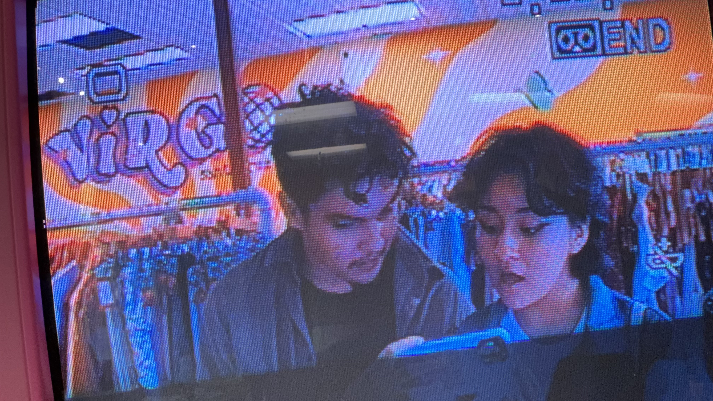
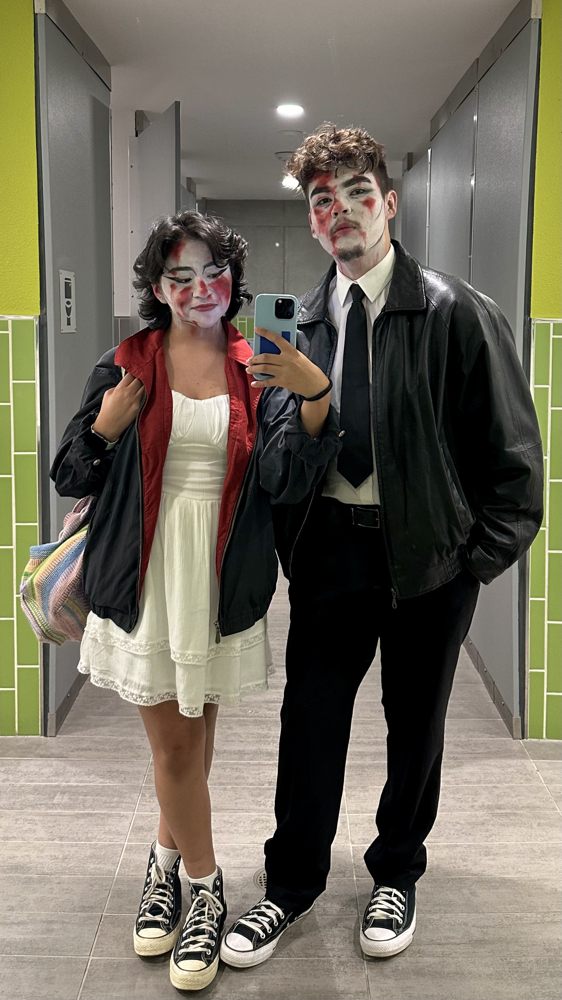
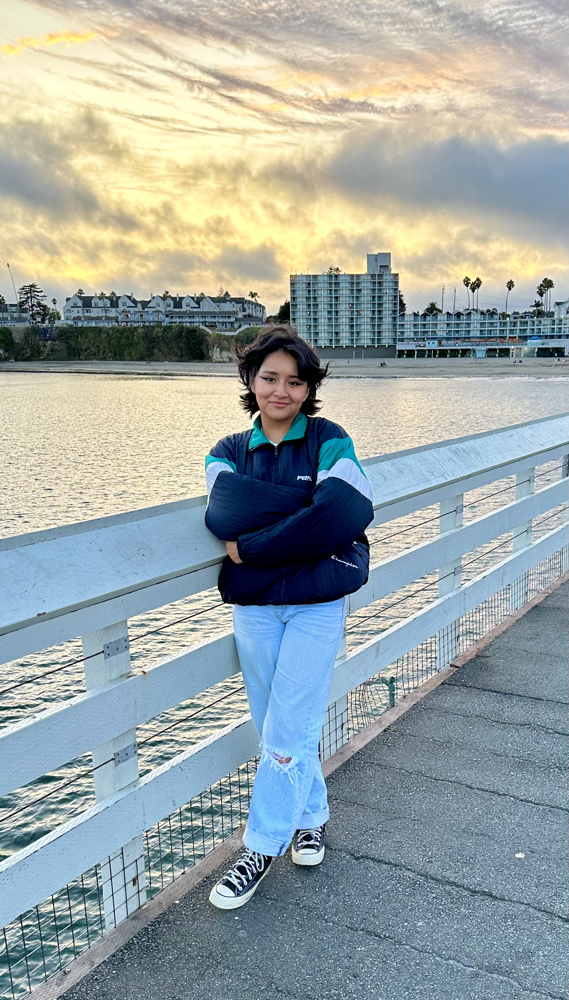

Lab 3 - File Structure and File Transfer
Challenge
Working with a partner, further create a local structure on your computer, add index.html files, and uppload to the server.
Problems
What problems arose? How did you solve them? We struggled to figure out how to implement the code and make it appear on our website. I ended up going on inspect element on my old website and disected the code in order to figure out how to replicate it and adjust the size as I needed.
Reflection
It went really well once I started to go back and forth and figure out how to implement each element efficiently. I think I'm still implementing stuff in a sort of caveman, monkey-brain manner but it's getting the job done so I don't mind. We definitely put a ton of effort into this though.
Results
We were able to figure out how to implement elements into our websites such as photos, photo sizes, and changing the background colors.
Who Am I?
Hello world! My name is Pricilla but I also go by Percy. I am a first year history major with an interest in Chicano and Latin American studies. I am from Delano, California, a small agricultural town in the Central Valley located near Bakersfield. I love creating art of all kinds, but my favorite is through film photography and painting with acrylic paint. I love meeting new people and learning about new things, so if you see me around feel free to say hello!
  